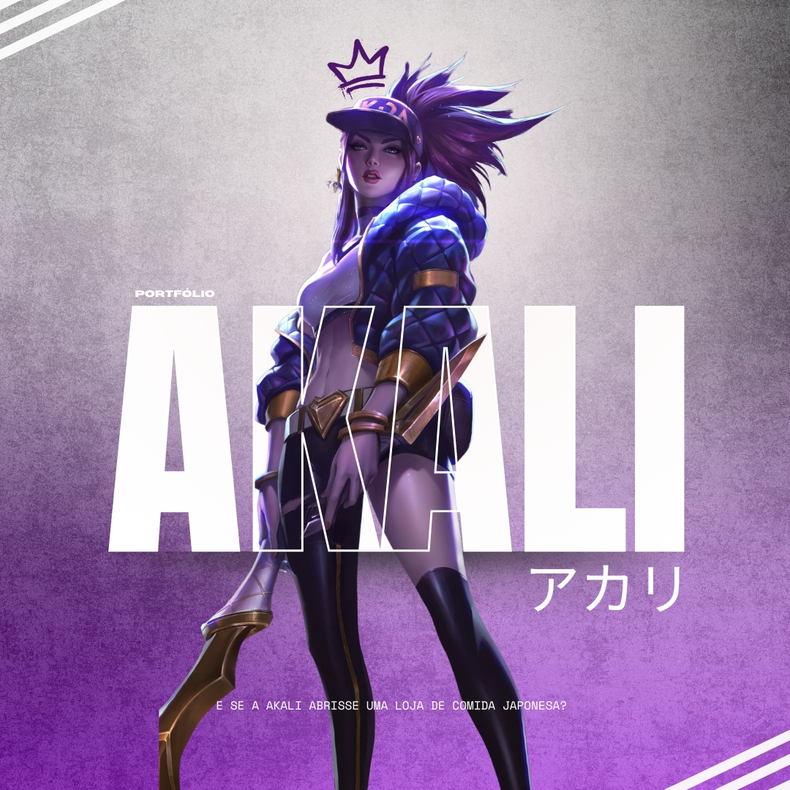
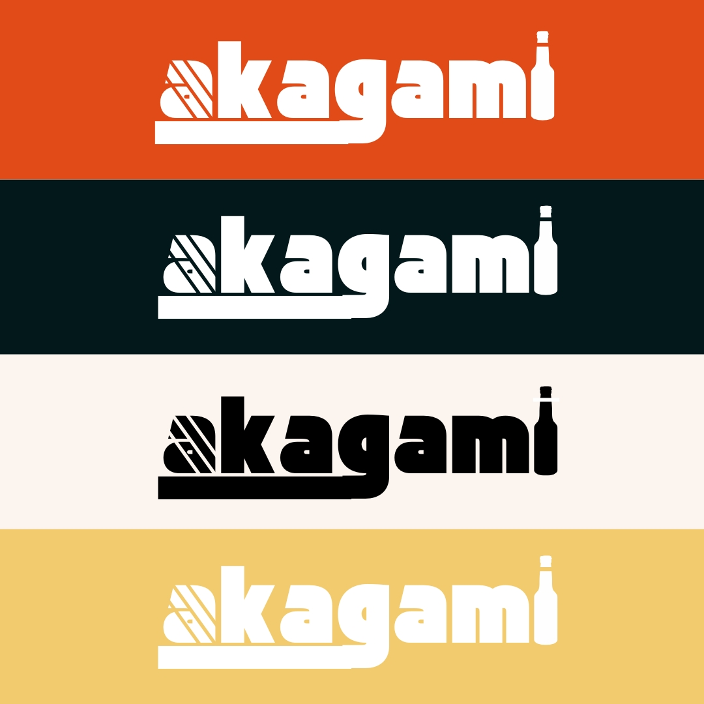

Galeria

.jpg)


Desenvolvedor Web | Designer
Arraste para cima para conhecer mais sobre mim!
Sou um profissional apaixonado por desenvolvimento web, design gráfico, ui/ux e com experiência acadêmica em gestão de eventos e agenciamento marítimo.
Ao longo da minha trajetória, desenvolvi tanto habilidades técnicas – como programação em C, Python, Javascript, CSS e HTML –, quanto competências interpessoais, aprimoradas no Grêmio Estudantil Chico Mendes (liderança, trabalho em equipe, comunicação e empatia). Minha vivência na Imapor me proporcionou um profundo entendimento do setor marítimo, permitindo que eu una expertise técnica a uma visão única da indústria. Estou comprometido em criar soluções inovadoras e impactantes, sempre em busca de novos desafios e oportunidades de crescimento.
Atuando como designer autônomo, desenvolvi conteúdos visuais para mídias sociais, capturando a essência de marcas e eventos. Essa experiência permitiu que eu aprimorasse minhas habilidades técnicas e criativas, oferecendo soluções inovadoras para fortalecer identidades visuais e engajar o público. Trabalhar de forma independente me proporcionou maior flexibilidade e um olhar mais estratégico sobre design e comunicação.
Na Makadesh Comunicação Visual, tive uma experiência enriquecedora que combinou atendimento ao cliente e criação de artes gráficas. No meu dia a dia, trabalhei diretamente com os clientes, entendendo suas necessidades e traduzindo suas ideias em soluções visuais criativas e impactantes. Essa função me permitiu aprimorar tanto minhas habilidades técnicas quanto minha capacidade de comunicação, contribuindo para o fortalecimento da identidade das marcas com as quais colaborei.
No Grêmio Estudantil Chico Mendes, tive a honra de assumir a presidência, o que me permitiu liderar um grupo de estudantes comprometidos com a representatividade e o desenvolvimento da nossa comunidade escolar. Durante minha gestão, organizei eventos culturais, esportivos e educacionais, incentivando a participação ativa de todos os colegas. Trabalhar em conjunto com a administração escolar e mediar o diálogo entre estudantes foi fundamental para promover um ambiente mais colaborativo e inclusivo. Essa experiência não só reforçou minhas habilidades de liderança e gestão, mas também aprofundou meu compromisso com a valorização e o fortalecimento da voz estudantil.
No Grêmio Estudantil Chico Mendes, como Diretor de Educação, tive a oportunidade de atuar de forma mais incisiva na área acadêmica, promovendo ações que visavam a melhoria do ambiente escolar e a valorização do ensino. Organizei campanhas educativas, workshops e eventos que incentivaram o engajamento dos alunos com temas relacionados ao aprendizado e ao desenvolvimento pessoal. Trabalhar em estreita colaboração com professores e estudantes me permitiu influenciar positivamente o processo educativo, sempre focando no bem-estar e na motivação dos colegas. Essa experiência reforçou meu comprometimento com a educação e me proporcionou crescimento nas áreas de gestão e execução de projetos educacionais.
Atualmente, estou cursando Tecnólogo em Análise e Desenvolvimento de Sistemas na Fatec Rubens Lara, aprofundando meus conhecimentos em programação, banco de dados e desenvolvimento de software para criar soluções inovadoras e eficientes.
Certificação em Agenciamento Marítimo
Meu Trabalho de Conclusão de Curso (TCC) com o tema "O Impacto Econômico do Agenciamento Marítimo" conquistou o 1º lugar, destacando a relevância desse setor para a economia. A pesquisa abordou a influência das operações de agenciamento nos fluxos comerciais, eficiência portuária e competitividade do mercado marítimo, evidenciando sua importância estratégica no comércio global."
Sou formado em Técnico em Eventos pelo IFSP - Campus Cubatão, onde desenvolvi habilidades em planejamento, organização e execução de eventos. Durante o curso, aprimorei minha criatividade, gestão de projetos e trabalho em equipe, adquirindo uma visão estratégica do setor.
Confira alguns dos meus projetos
Tenho experiência em edição de imagens para internet, criando designs visuais atrativos para mídias sociais, sites e campanhas digitais. Utilizo ferramentas como Photoshop e Canva para desenvolver artes que combinam estética e comunicação eficaz.
Ver Exemplos no DriveTenho experiência em edição de vídeos para internet, utilizando Adobe Premiere Pro e CapCut para criar conteúdos dinâmicos e envolventes. Trabalho com cortes, transições, efeitos e ajustes de cor para produzir vídeos de alta qualidade para mídias sociais e campanhas digitais.
Ver Exemplos no DriveTenho experiência em desenvolvimento web simples, criando sites responsivos e estilizados com HTML, CSS e JavaScript. Foco em layouts intuitivos, animações suaves e uma experiência de usuário fluida para projetos pessoais e profissionais.
Ver Exemplos no LinkTree